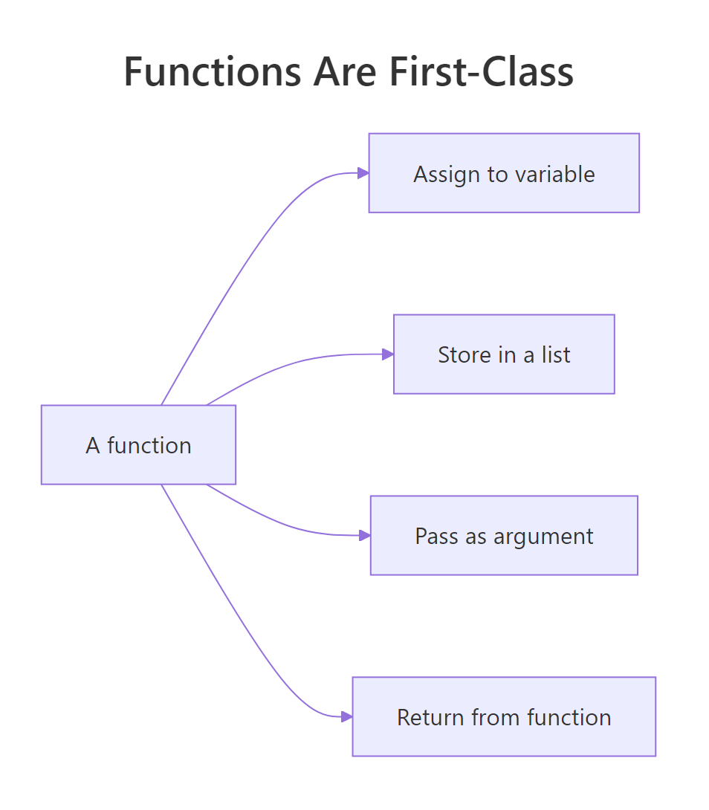
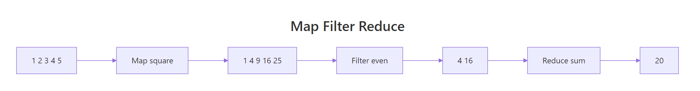
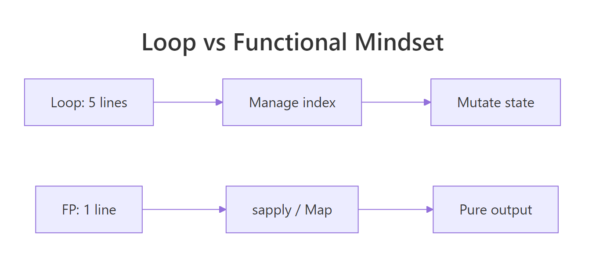

Functional Programming in R: The Mindset That Makes Your Code 10× Cleaner
Functional programming in R is the discipline of treating functions as ordinary values, you can store them, pass them around, and compose them, so repetitive loops collapse into single lines that say exactly what they do. Once the mindset clicks, most of your R code gets dramatically shorter, safer, and easier to read.
Why is functional programming a mindset, not a package?
You've written the loop before: declare an empty vector, count indices, assign by position, try not to break the bookkeeping. It works, but most of the code is scaffolding, not meaning. Functional style flips that ratio. You describe the transformation once and hand it to R, the iteration disappears into a single call. Here is the same answer, both ways.
Both blocks produce the same vector. The loop spends four lines managing an index and a result buffer before it ever mentions squaring. The sapply call says, in one line, "apply this function to each element." That is the entire pitch of functional style: stop writing the bookkeeping, start writing the meaning.
sapply, Map, Filter, and Reduce ship with R itself. The popular purrr package is a modern, type-stable wrapper on the same ideas, we will see one line of it near the end so you can recognise the pattern later.Try it: Convert a vector of Celsius temperatures temps_c <- c(15, 22, 8, 30, 18) to Fahrenheit using sapply and the formula F = C * 9/5 + 32. Save the result to ex_temps_f.
Click to reveal solution
Explanation: sapply calls the anonymous function on every element of temps_c and simplifies the result to a numeric vector. The whole conversion is a one-liner because the "what" fits in one expression.
How are functions first-class objects in R?
"First-class" is a claim about status: a value is first-class when you can do the same things to it that you can do to any other value. Integers are first-class, you can assign them, put them in a list, pass them to a function, or return them. In R, functions have exactly the same privileges. Seeing the proof of that is the fastest way to unlock the mindset.
double is now a name that refers to a function, exactly the way x <- 7 makes x refer to a number. The ops list holds three functions together, each retrievable with $. If this feels normal, good, that is the goal. Functions in R are ordinary values you can carry around in any container.
The other two privileges are "pass as an argument" and "return from another function." Here is a function that takes another function and applies it twice.
apply_twice is a higher-order function: a function whose argument (or return value) is itself a function. The first call hands over double, the second hands over an inline anonymous function. R treats them identically because, to R, they are just values of type function.

Figure 1: Four things you can do with a function that you can also do with any value.
function(x) x + 1 inline is shorter than defining a helper you will never reuse. R 4.1+ also supports the shorthand \(x) x + 1, which reads especially well inside sapply and Map.Try it: Write ex_apply_thrice(f, x) that applies f three times to x. Test it using \(x) x + 1 on 0, the answer should be 3.
Click to reveal solution
Explanation: The function composes f with itself three times. Starting from 0, each call adds one: 0 -> 1 -> 2 -> 3. This is a tiny taste of how you build behaviour by combining functions instead of writing more code.
What are map, filter, and reduce, R's three core functionals?
Nearly every repetitive task on a collection fits one of three shapes. Map transforms each element, filter keeps elements that pass a test, and reduce collapses everything into a single value. R ships all three as base functions, Map(), Filter(), and Reduce(), plus the friendly vector-returning cousins sapply() and vapply(). Once you recognise the three shapes, you will spot them everywhere.
Read from top to bottom: Map returned a list (one squared value per input), sapply did the same job but gave back a plain numeric vector, Filter kept only the even values, and Reduce collapsed 1:6 to the sum 21. The accumulate = TRUE variant is a debugging gift, it shows you every intermediate value, so you can see why repeatedly adding 1:6 must end at 21.

Figure 2: How map, filter, and reduce transform a collection step by step.
sapply() or vapply() (stricter, type-checked), or wrap the Map() call in unlist(). Forgetting this is a top reason beginners think functional code "looks weird", they are getting lists where they expected numbers.Try it: Use Filter to keep only strings longer than 3 characters from words <- c("R", "cat", "tiger", "ox", "whale"). Save the result to ex_long_words.
Click to reveal solution
Explanation: nchar(w) > 3 is the predicate, a function that returns TRUE or FALSE for each element. Filter keeps only the inputs for which the predicate is TRUE. "tiger" (5) and "whale" (5) pass; the rest are dropped.
How do pure functions and closures power functional style?
Two ideas make functional code safe and reusable. A pure function depends only on its arguments and changes nothing else, given the same inputs, it always returns the same output. A closure is a function that remembers the environment it was created in, so it can carry a piece of state without using a global variable. Together they explain why functional R is easy to test and easy to compose.
add(2, 3) will return 5 forever, no matter how many times or in what order you call it, that is purity. impure_increment() returns a different number on every call because its answer depends on the hidden counter variable. Impure functions can be useful, but they make code harder to reason about: to predict the output, you need to know the history of every prior call. Functional style prefers purity because purity is what makes Map, Filter, and Reduce trustworthy, R can call them in any order without surprises.
A closure looks similar but uses the outer environment in a controlled, read-only way.
make_multiplier(3) returns a brand-new function whose body refers to factor. That factor lives in the environment make_multiplier was running in when it returned, and the returned function keeps a reference to it forever. times_three and times_ten are two different closures, each remembering its own factor. This is how you build specialised functions from a general recipe, no classes, no templates, just one line.
factor because it was born inside make_multiplier. This "memory" is what lets one recipe generate many specialised workers without repeating yourself.Try it: Write ex_make_greeter(greeting) that returns a function pasting greeting before a name. Use it to build a hi function and call it on "Selva".
Click to reveal solution
Explanation: ex_make_greeter returns an inner function that closes over greeting. Calling ex_make_greeter("Hi") creates a new closure where greeting is "Hi" forever, so hi("Selva") pastes "Hi" in front of any name you pass.
When should you reach for functional style instead of a loop?
Not every loop needs to be refactored. If the loop is tiny, imperative, and easier to read than the alternative, leave it alone, the goal is clarity, not ideological purity. But the moment a loop is describing a transformation (each → something), a filter (keep items where), or an accumulation (combine all into one), that loop is secretly a functional, and rewriting it usually shrinks the code by half.
Here is a concrete comparison on the built-in mtcars dataset, compute the mean of three columns.
Both versions return the same named numeric vector. The functional version is a single line because sapply already knows how to iterate over a list (a data frame is a list of columns) and collect results by name. The loop version needs four lines to reproduce that plumbing by hand. Read the sapply line aloud: "apply mean to each of these columns." That sentence is the code.
If you work in the tidyverse, the same idea is one line of purrr:
map_dbl is the type-stable sibling of sapply: it returns a double vector or it errors, it never silently gives you a list. That guarantee is the main reason purrr exists alongside base R's functionals.
sapply, lapply, Map, Filter, and Reduce are always available and teach the vocabulary. purrr::map_dbl, map_chr, map_lgl, and map_df add type-stable returns and pipe-friendly ergonomics when you want them.A practical decision list:
- Describing a transformation? Use
sapply,Map, orpurrr::map_*. - Keeping only some elements? Use
Filterorpurrr::keep. - Collapsing to one value? Use
Reduceorpurrr::reduce. - Need a running side-effect like printing, plotting, or writing files? Use
for, orpurrr::walkif you want the functional style, side effects are legal, they are just not the functionals' strength.
Try it: Replace the loop total <- 0; for (i in 1:100) total <- total + i with a one-line Reduce call. Save the result to ex_total.
Click to reveal solution
Explanation: Reduce applies + pairwise across the vector: 1 + 2 = 3, then 3 + 3 = 6, then 6 + 4 = 10, and so on. The final value is the classic Gauss sum 5050. One line replaces a three-line loop, and the intent reads right off the page.
Practice Exercises
These capstones combine two or more ideas from the tutorial. Each uses distinct variable names prefixed with my_ so you can experiment without overwriting tutorial state.
Exercise 1: Filter then map for word lengths
Given the list below, use Filter and sapply together to return a numeric vector of lengths of words that have at least 5 letters. Save the result to my_long_lengths.
Click to reveal solution
Explanation: Filter keeps "banana", "strawberry", and "watermelon". sapply(long_words, nchar) then measures each surviving word. This is the canonical filter-then-map shape and is how most real data pipelines begin.
Exercise 2: Build a power function with a factory
Write a function factory make_power(n) that returns a function raising its input to the nth power. Use it to create cube and then apply cube to 1:5. Save the resulting vector to my_cubes.
Click to reveal solution
Explanation: make_power(3) returns a closure that remembers n = 3. Every call to cube(x) computes x^3. You could also build square <- make_power(2) from the same factory, one recipe, many specialised workers.
Exercise 3: Running factorial with accumulate
Use Reduce with accumulate = TRUE to compute the running product of 1:6, these are the factorials 1!, 2!, 3!, up to 6!. Save the resulting vector to my_factorials.
Click to reveal solution
Explanation: Multiplication is the reducer. accumulate = TRUE captures each intermediate product: 1, then 1*2 = 2, then 2*3 = 6, then 6*4 = 24, and so on. Running totals and running products are the two most useful Reduce patterns in practice.
Complete Example
Let's put all five ideas to work on a tiny but realistic task: given a small inventory, compute the average price of items that are currently in stock. This example uses first-class functions (stored in a list-of-records), a filter, a map, and a reduce, the whole FP toolkit on three lines of data.
Each step has a single job and a single shape. You filter to drop out-of-stock items, map to extract the field you care about, and reduce to collapse many values into one. Every intermediate result is visible, so debugging is trivial, you check each pipe one at a time. Once the steps work, you can chain them into a single line for production:
That one-liner is the reward for learning the vocabulary. It reads right to left like a sentence: "take the mean of the prices of the in-stock items in inventory." Your future self will thank you for writing it this way.
Summary
Functional programming in R is a mindset before it is a toolkit. Once you accept that functions are ordinary values, the rest falls out naturally, map, filter, and reduce become the obvious way to describe repetitive work, pure functions become the obvious way to keep results predictable, and closures become the obvious way to build specialised workers from a single recipe.

Figure 3: The mental move from looping to functional style.
Five takeaways to keep:
- Functions are values. Assign them, store them in lists, pass them as arguments, return them from other functions.
- Three shapes cover most iteration. Transform with
Map/sapply, filter withFilter, collapse withReduce. Spot the shape, pick the functional. - Pure functions are easier to reason about. Same inputs, same output, no hidden state, that is the guarantee that makes composition safe.
- Closures carry state cleanly. A function returned from another function remembers the environment it was born in, use that to build specialised workers.
- Start with base R, graduate to purrr.
sapply,Map,Filter,Reduceteach the vocabulary.purrr::map_dbland friends add type safety when you need it.
References
- Wickham, H., Advanced R, 2nd Edition. Chapter 9: Functionals. Link
- Wickham, H., Advanced R, 2nd Edition. Chapter 6: Functions. Link
- Peng, R. D., Mastering Software Development in R, §2.3 Functional Programming. Link
- R Core Team,
Map,Filter,Reducereference (funprog). Link - purrr tidyverse package documentation. Link
- Rodrigues, B., Modern R with the tidyverse, Chapter 8: Functional Programming. Link
Continue Learning
- purrr map() Variants, the type-stable, pipe-friendly modern alternative to
sapply. - R Anonymous Functions, a deep dive into
function(x) ...and the R 4.1+ shorthand\(x) .... - Reduce, Filter, Map in R, a focused walkthrough of the base-R trio with more examples.
Further Reading
- Infix Functions in R: Write Your Own %op% Operators
- R Currying & Partial Application: purrr::partial() & rlang
- Advanced R Exercises: 10 Functional Programming Practice Problems, Solved Step-by-Step
- Tail Call Optimization in R: Recursive Functions Without Stack Overflow
- furrr Package in R: Parallel purrr with future Backend
- purrr Exercises: 10 Functional Programming Practice Problems, Solved Step-by-Step